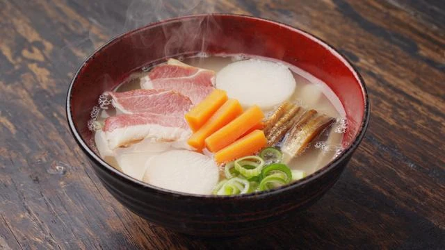
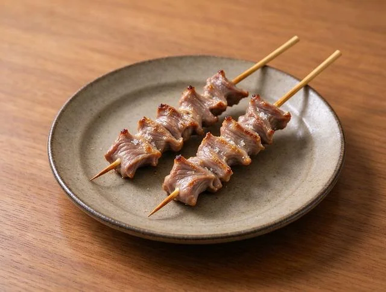
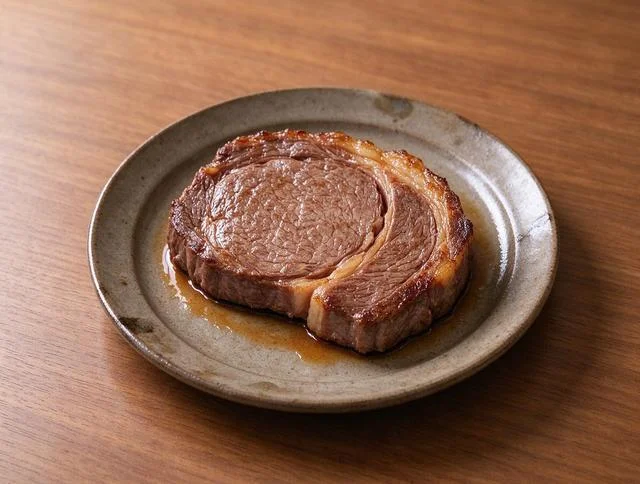

すべての目次料理
ちゃんと「いただく」方法
 炭火で焼くスペアリブのたれは、ここで塗る
炭火で焼くスペアリブのたれは、ここで塗る 鍋で煮込む牛すねを、スプーンでほどけるシチューに
鍋で煮込む牛すねを、スプーンでほどけるシチューに フライパンで焼く鶏ももの皮を、パリッと焼く
フライパンで焼く鶏ももの皮を、パリッと焼く フライパンで炒める豚こまを香ばしい生姜焼きに
フライパンで炒める豚こまを香ばしい生姜焼きに 衣をつけて揚げる豚ロースのとんかつを切ってみる
衣をつけて揚げる豚ロースのとんかつを切ってみる
鍋で煮る豚こまが少し残ったら、ふたり分の豚汁に台所の基本


写真で見る、もう30皿
焼く・串に刺す






 炭火で焼くスペアリブのたれは、ここで塗る鍋で煮込む牛すねを、スプーンでほどけるシチューにフライパンで焼く鶏ももの皮を、パリッと焼くフライパンで炒める豚こまを香ばしい生姜焼きに衣をつけて揚げる豚ロースのとんかつを切ってみる
炭火で焼くスペアリブのたれは、ここで塗る鍋で煮込む牛すねを、スプーンでほどけるシチューにフライパンで焼く鶏ももの皮を、パリッと焼くフライパンで炒める豚こまを香ばしい生姜焼きに衣をつけて揚げる豚ロースのとんかつを切ってみる
鍋で煮る豚こまが少し残ったら、ふたり分の豚汁に
